João Rodrigues
Full Stack Entwickler
Full Stack Entwickler und Software Engineer Intern bei Scrona AG, mit einem Diplom vom Code Institute und praktischer Erfahrung mit Django, Python, JavaScript, C++/Qt, QML, PHP, Laravel, Bootstrap und PostgreSQL. Ich verbinde technische Weiterentwicklung mit über 15 Jahren Managementerfahrung, klarer Kommunikation und einem starken Fokus auf nützliche Weblösungen.
Was ich mitbringe
Ich entwickle Full-Stack-Webanwendungen mit Django, Python, JavaScript, Bootstrap, PostgreSQL und modernen Deployment-Workflows. Meine aktuelle Erfahrung bei Scrona AG erweitert diesen Stack um C++/Qt, QML, PHP und Laravel, während meine stärksten Portfolio-Projekte Backend-Entwicklung, Authentifizierung, Zahlungen, Cloud-Storage, Docker und produktionsnahes Problemlösen zeigen.
Vor meinem Einstieg in die Softwareentwicklung war ich mehr als 15 Jahre in Managementrollen tätig. Diese Erfahrung prägt meine Arbeitsweise: klare Kommunikation, verlässliche Umsetzung, Verständnis für Nutzerbedürfnisse und technische Entscheidungen mit Blick auf echte Geschäftsziele.
- Full-Stack-Anwendungen mit Django
- Aktuelle Erfahrung mit C++/Qt, QML, PHP und Laravel
- Modernisierte Legacy-Projekt-Deployments
- Erfahrung mit Kunden- und Teamprojekten
- Praktische UX-Verbesserungen mit Bootstrap
Backend
Django, Python, PostgreSQL, PHP, Laravel, Datenmodelle, Authentifizierung, Zahlungen und serverseitige Workflows.
Frontend
Responsives HTML, CSS, JavaScript, Bootstrap, QML, zugängliche Layouts und saubere UI-Details.
Delivery
Docker, Render, Heroku, AWS S3, GitHub-Workflows, Umgebungskonfiguration und Deployments.
Leadership
Software-Engineering-Praktikum, Managementerfahrung, Stakeholder-Kommunikation, Planung und Scrum-Praxis.
Ausgewählte Projekte
Eine fokussierte Auswahl von Projekten, die meine aktuellen Full-Stack-, Deployment-, Kunden- und Teamfähigkeiten am besten zeigen.
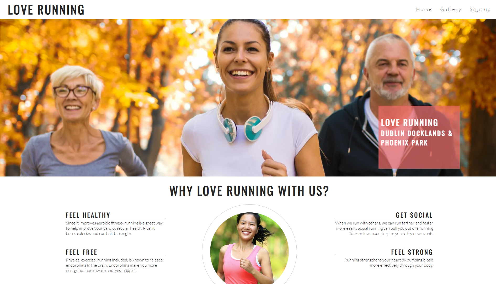
Love Running
Meine erste komplette statische Website, erstellt für einen Laufclub unter Verwendung von Frontend-Kerntechnologien. Dieses Projekt festigte mein Verständnis von HTML-Struktur, CSS-Styling und responsiven Designprinzipien.

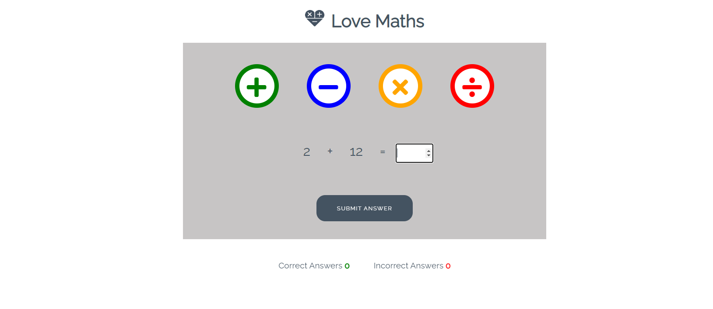
Love Maths
Eine interaktive Frontend-Anwendung, die ein einfaches Mathespiel bietet. Dieses Projekt war meine Einführung in JavaScript, wobei der Schwerpunkt auf DOM-Manipulation, Ereignisbehandlung und grundlegender Spiellogik lag.

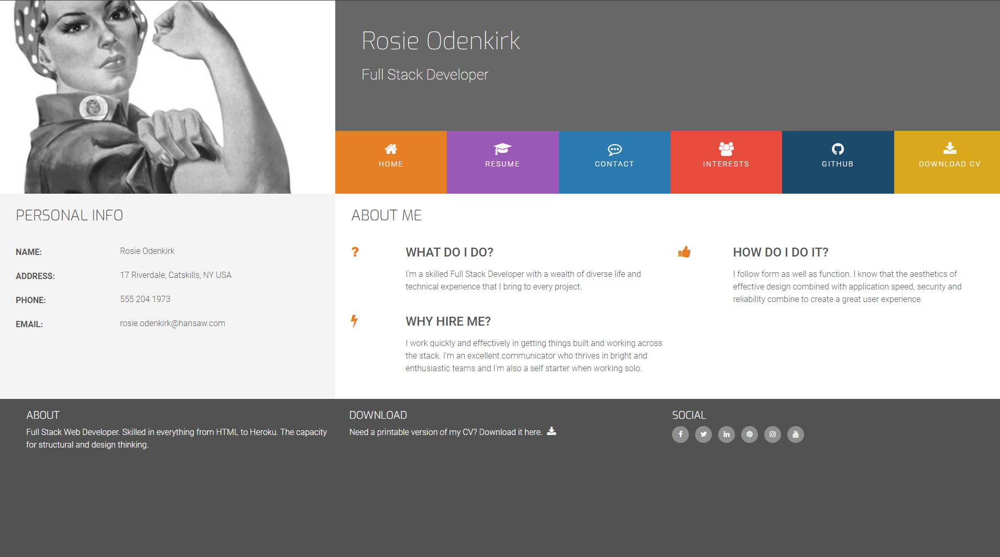
Online-Lebenslauf
Mein erstes Projekt, das das Bootstrap-Framework nutzte. Dieser Online-Lebenslauf zeigt meine Fähigkeit, responsives Design zu implementieren und ein beliebtes CSS-Framework für effizientes Styling und Layout zu nutzen.
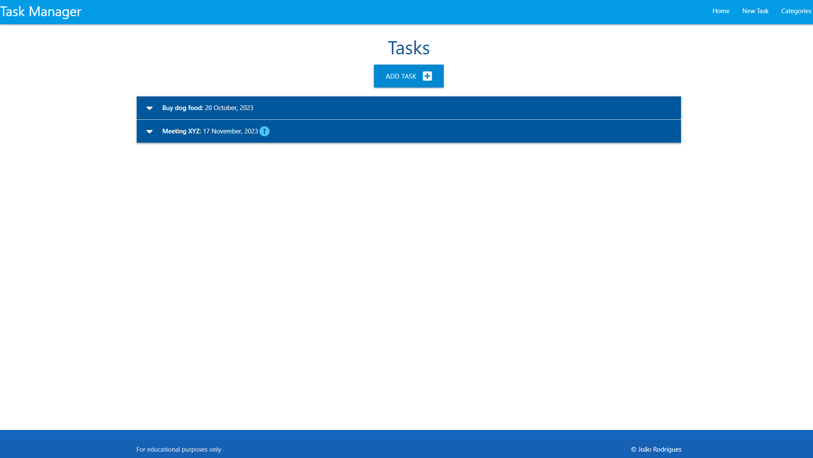
Task Manager
Mein erster Ausflug in die Backend-Entwicklung, bei dem ich eine einfache Task Manager Anwendung erstellte. Dieses Projekt führte mich in die Verwendung von Flask für die Webanwendungsentwicklung und SQLAlchemy für Datenbankinteraktionen ein und verschaffte mir grundlegende Erfahrungen mit serverseitiger Logik und Datenpersistenz.
- HTML
- CSS
- JavaScript
- Python
- Bootstrap
-
Materialize
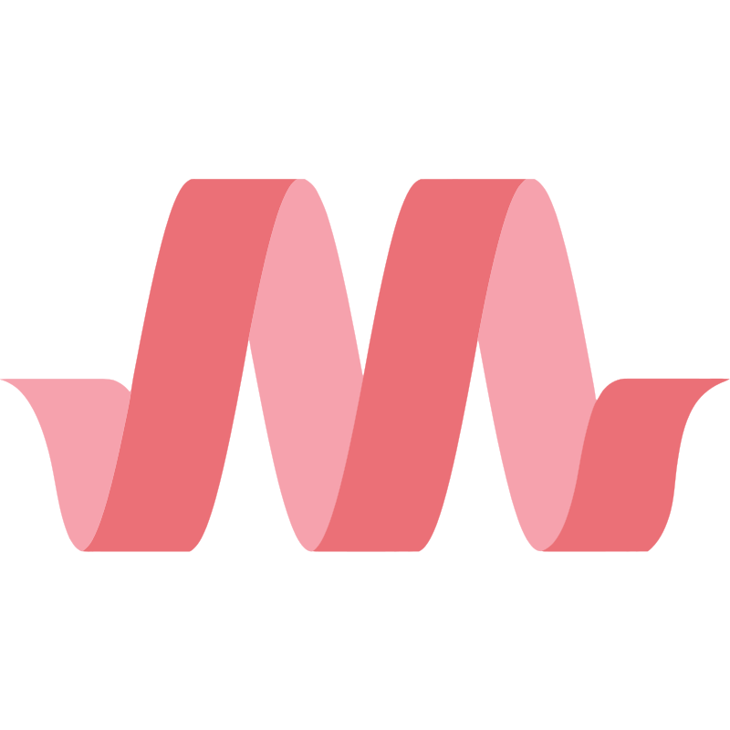
- Flask
- SQLAlchemy
- Heroku
- GitHub


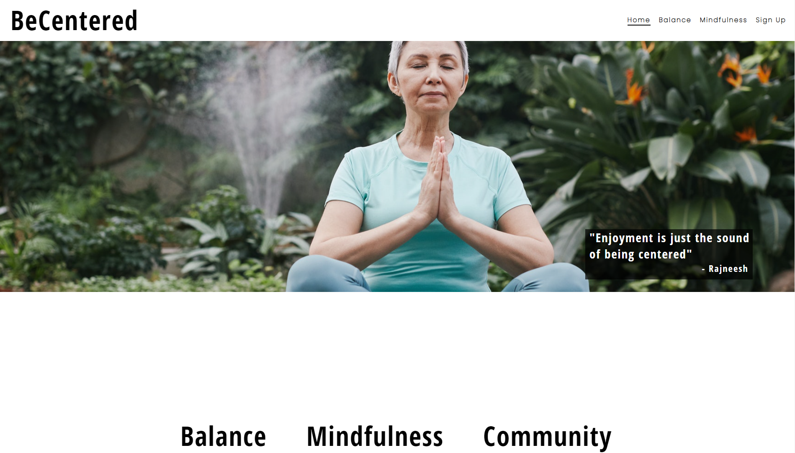
BeCentered
Ein Prototyp einer statischen E-Commerce-Website für eine Yoga- und Meditationslehrerin, erstellt als mein erstes bewertetes Projekt. Dieses Projekt ermöglichte es mir, grundlegende HTML-, CSS- und responsive Designprinzipien anzuwenden, um eine professionelle Online-Präsenz zu schaffen.
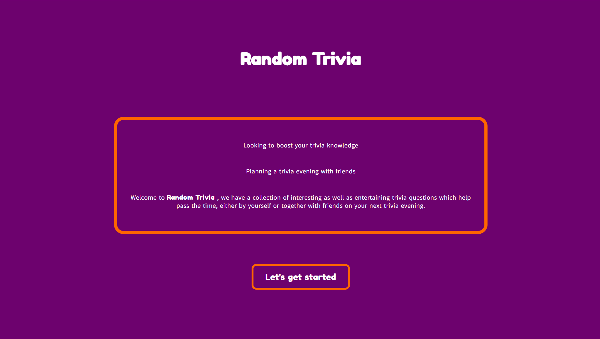
Random Trivia
Eine fesselnde Frontend-Quiz-Anwendung. Dieses Projekt vertiefte meine JavaScript-Kenntnisse, wobei der Schwerpunkt auf dynamischer Inhaltserstellung, API-Integration zum Abrufen von Fragen sowie der Verwaltung des Spielstatus und der Benutzerinteraktion lag.
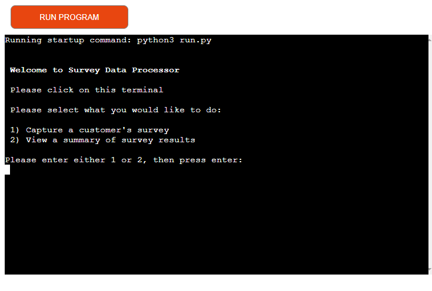
Survey Data Capture
Eine Python-Terminalanwendung zur Erfassung und Zusammenfassung von Umfragedaten. Dieses auf Heroku gehostete Projekt zeigt meine Fähigkeit, Kommandozeilenanwendungen zu erstellen, Benutzereingaben zu verarbeiten und Daten in Python zu verarbeiten.
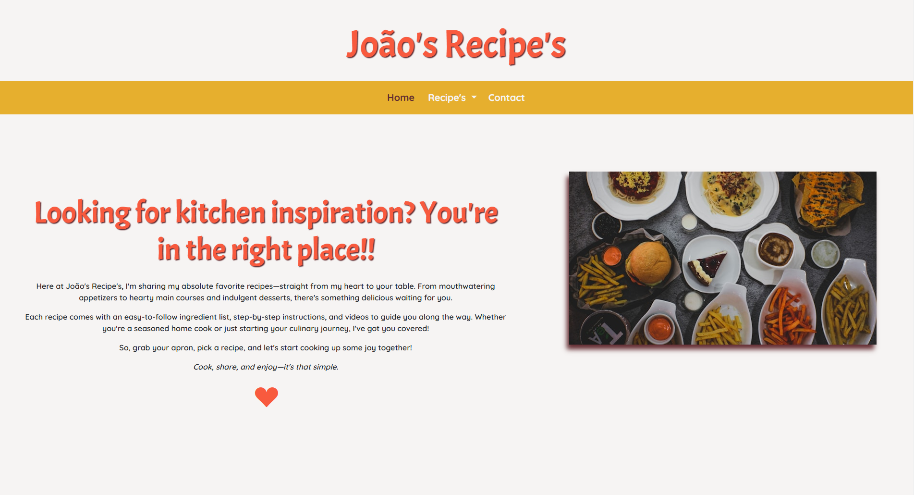
João's Rezepte
Eine statische Rezept-Website, entwickelt im Rahmen eines Bootcamp-Bewerbungsprozesses. Dieses Projekt zeigt meine Fähigkeit, schnell eine mehrseitige statische Website mit funktionalen Elementen wie einem Kontaktformular (mit EmailJS) zu erstellen und die Bereitstellung über Netlify mit GitHub-Integration zu demonstrieren.

Ocean Basket
Eine Full-Stack-Django-Plattform für
Restaurantbuchungen, die von einer CRUD-basierten
Reservierungs-App zu einem modernen, portfolio-reifen
Restauranterlebnis weiterentwickelt wurde.
Dieses
v2.0-Upgrade modernisiert das Projekt mit Django 5.2,
Python 3.12.10, Docker-Containerisierung, Deployment
auf Render und einem testgetriebenen
Entwicklungsansatz. Die Anwendung umfasst nun eine
responsive öffentliche Landingpage, datenbankgestützte
Menüverwaltung, rollenbasierte Dashboards für Kunden
und Mitarbeitende, authentifizierte
Reservierungsabläufe, Stornierungsbestätigung,
Kapazitätsvalidierung für Buchungen,
benutzerdefinierte Fehlerseiten sowie
UI-Verbesserungen mit Fokus auf Barrierefreiheit.
Das Projekt demonstriert Full-Stack-Entwicklung,
UX-Planung, Django-Models/Forms/Views,
Authentifizierung und Zugriffskontrolle,
admin-verwaltete Inhalte, responsives Frontend-Design
sowie eine starke Testkultur mit 53 bestandenen Tests
und hoher Testabdeckung.
- HTML
- CSS
- JavaScript
- Python
- PostgreSQL
- Django
- Docker
- Render.com
- GitHub


Farm Fresh
Eine umfassende Full-Stack E-Commerce-Anwendung für
einen Online-Shop für frische Produkte, konzipiert mit
einem Mobile-First-Ansatz und starkem Fokus auf das
Benutzererlebnis.
Erstellt mit Django und PostgreSQL, bietet sie sichere
Benutzerauthentifizierung (Django Allauth), einen
dynamischen Warenkorb und nahtlose Zahlungsintegration
über Stripe, einschließlich Webhook-Verarbeitung. Das
Projekt umfasst robuste Datenmodelle, nutzt AWS S3 für
die Speicherung von Mediendateien und wurde nach
agilen Methoden mit detaillierter Planung und Tests
entwickelt.
Kürzlich auf Version 2.0 aktualisiert, verwendet
dieses Projekt nun die neueste Version von Django
(5.2) und Python (3.12.10), ist mit Docker
containerisiert und wird bald über eine umfassende
Suite von Unit-Tests verfügen, um Zuverlässigkeit und
Wartbarkeit weiter zu verbessern.
- HTML
- CSS
- JavaScript
- Python
- PostgreSQL
- Django
- Bootstrap
- Stripe
- AWS S3
- MailChimp
- Docker
- Render.com
- GitHub
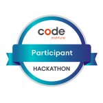
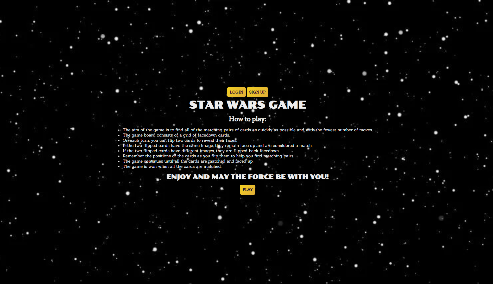
Sith-ly the Best
Ein interaktives Star Wars Memory-Spiel, entwickelt während eines 5-tägigen Hackathons mit einem Team von 7 Personen. Als gewählter Scrum Master habe ich die Zusammenarbeit im Team erleichtert und das Projekt von der Konzeption bis zum funktionierenden Prototyp begleitet, wobei ich wertvolle Erfahrungen in der Teamarbeit sammelte.
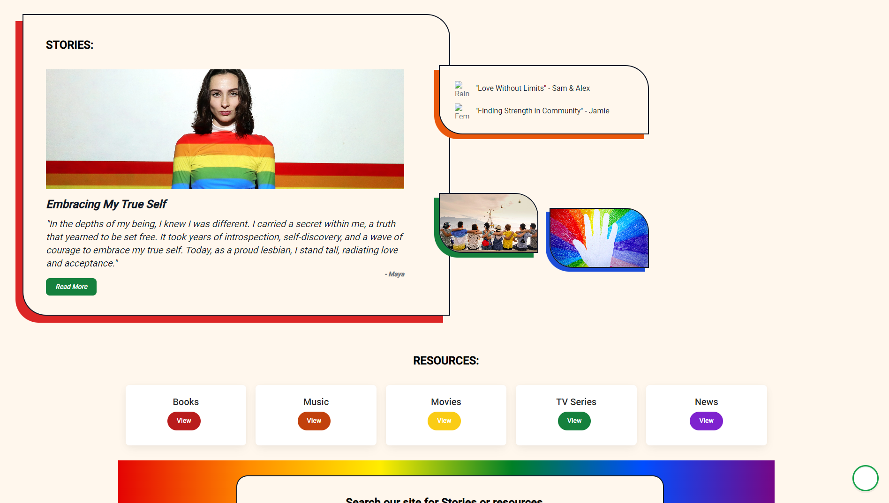
Rainbow Warriors
Ein Webanwendungskonzept für die LGBTQ+-Community zum Austausch von Ressourcen, entwickelt während eines Hackathons. Als Scrum Master für dieses 7-köpfige Team konzentrierte ich mich darauf, die Zusammenarbeit zu erleichtern und den Fortschritt trotz Teamherausforderungen aufrechtzuerhalten, was meine Führungsqualitäten und Anpassungsfähigkeit in einem dynamischen Projektumfeld unter Beweis stellte. Das Projekt erhielt eine lobende Erwähnung von den Juroren.
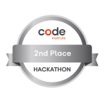
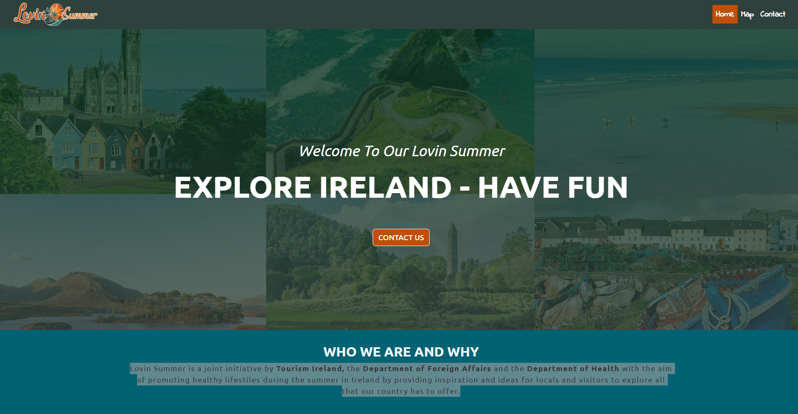
Lovin Summer
Eine Frontend-Webanwendung zur Förderung eines gesunden Sommerlebensstils in Irland, erstellt von einem 7-köpfigen Team während eines 5-tägigen Hackathons. Als freiwilliger Scrum Master habe ich die Bemühungen des Teams koordiniert, was zu einem Mobile-First-Design und einer funktionalen Anwendung führte, die den 2. Platz im Wettbewerb belegte. Dieses Projekt unterstreicht meine Fähigkeit, unter Druck zu führen, zu motivieren und Ergebnisse zu liefern.
- HTML
- CSS
- JavaScript
- Bootstrap
- Leaflet
- REST Countries API
- Fáilte Ireland's API
- Netlify
- GitHub
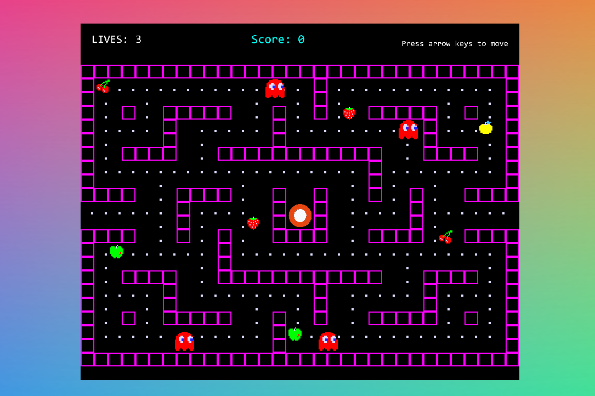
Hack-Man
Ein reines Frontend-Retro-Arcade-Spiel, inspiriert von Pac-Man, kollaborativ von einem 6-köpfigen Team während eines Hackathons erstellt. Als freiwilliger Scrum Master führte ich das Team, von denen viele neu in der Versionskontrolle waren, durch den Entwicklungsprozess, wobei der Schwerpunkt auf Teamarbeit und schneller Iteration lag, um ein spielbares Spiel innerhalb des 5-tägigen Zeitrahmens zu liefern.
- HTML
- CSS
- JavaScript
- Bootstrap
- Django
-
Kaboom.js
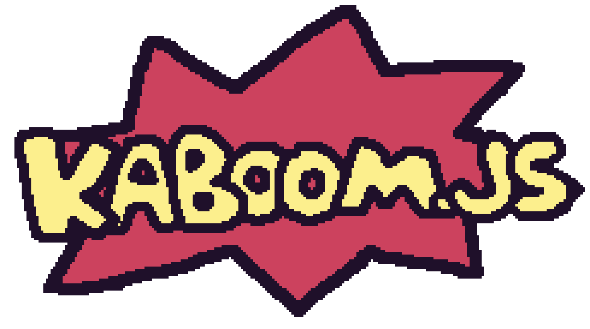
- GitHub
- GitHub Pages
Starathon
Ein interaktives Frontend-Quiz/Trivia-Spiel basierend auf dem Star Wars Franchise, kollaborativ von einem 5-köpfigen Team entwickelt. Als nominierter Scrum Master habe ich die Arbeit des Teams erleichtert, wobei der Schwerpunkt auf der Integration von Funktionen wie Soundeffekten und mehreren Schwierigkeitsgraden lag. Dieses Projekt zeigt meine Fähigkeit, ein Team zu führen und eine unterhaltsame, interaktive Anwendung unter Hackathon-Bedingungen zu liefern.
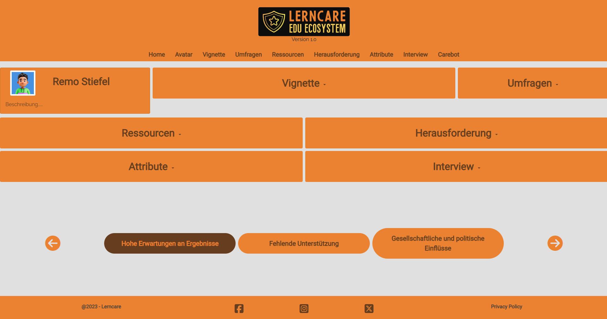
Lerncare
Eine Anwendung zur Unterstützung von Lehrern in der Schweiz, die Ressourcen und Tools zur Bewältigung der Herausforderungen des Berufs bietet. Dieses Projekt, das derzeit auf Wunsch des Kunden pausiert, zeigt meine Fähigkeit, Anwendungen zu entwickeln, die spezifische Benutzeranforderungen erfüllen und nach Kundenwunsch arbeiten.
SAVO
Eine statische Website, entwickelt für die Schweizerische Vereinigung der Tierärztlichen Ophthalmologen (SAVO). Diese Live-Website bietet wichtige Informationen über die Vereinigung und Kontaktdaten und zeigt meine Fähigkeit, funktionale und informative Webpräsenzen für Kunden zu erstellen.
Lass uns sprechen
Ich interessiere mich für Junior- bis Mid-Level-Rollen als Full Stack, Backend oder Software Engineer in der Schweiz, besonders in Teams, in denen ich zu Webentwicklung, Backend-Systemen, Deployment und produktorientierter Umsetzung beitragen kann.